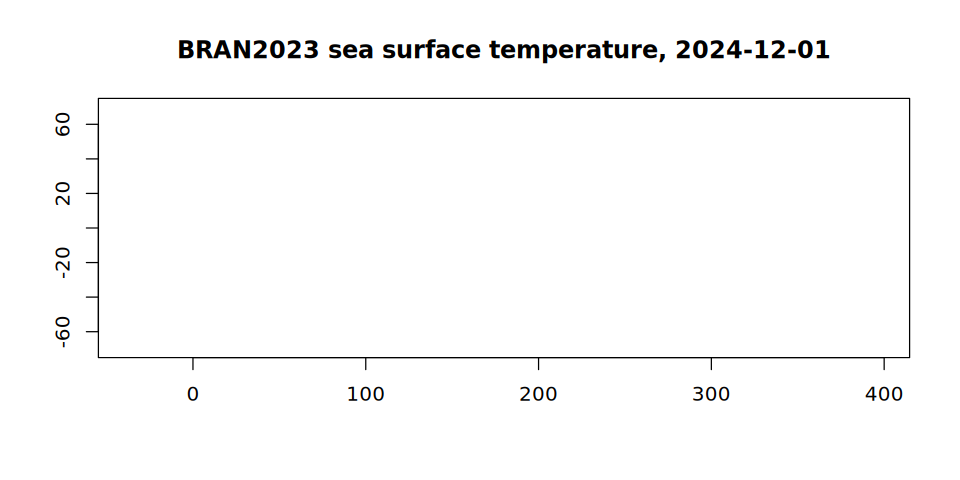

One array, two virtualisations: mosaic VRT and virtual references
Source:vignettes/articles/virtual-references.Rmd
virtual-references.RmdA model run is usually published as many files: one per month, each holding that month’s days of a four-dimensional array. To analyse the run, those files have to be seen as the one array they were cut from. There are two ways to do that without copying any data, and GDAL reads both:
- a mosaic: a multidimensional VRT, written by
gdal mdim mosaic, that says which file holds which part of the array and leaves GDAL to open the files and read them with the netCDF driver; - virtual references: a Zarr store whose chunks are not stored but pointed at, each as a URL, an offset and a length into one of the original files. The pointers come from reading the files’ internal chunk index once, and GDAL reads them with the Zarr driver.
Both end with a GDALMDArray, and the values are the same
bytes. This article builds both for the same array and compares them. It
follows the virtualized
repository, which holds virtual references for the Bluelink
reanalysis.
The data
BRAN2023
is CSIRO’s Bluelink ocean reanalysis: a global 0.1 degree ocean model
run, daily. Its potential temperature is published on NCI’s THREDDS
server as one netCDF-4 file per month, each
(Time, st_ocean, yt_ocean, xt_ocean) with the days of the
month, 51 depths, 1500 latitudes and 3600 longitudes, stored as packed
16-bit integers in chunks of one day, one depth and 300 by 300
cells.
THREDDS serves each file over plain HTTP with range requests, so
/vsicurl/ reads just the parts of a file it needs. At NCI
the same files are on disk under
/g/data/gb6/BRAN/BRAN2023/daily, and nothing below changes
but the directory, so it is read from the BRAN_DAILY
environment variable with THREDDS as the default. It says where this
article was built:
library(GDAL7)
bran <- Sys.getenv(
"BRAN_DAILY",
"/vsicurl/https://thredds.nci.org.au/thredds/fileServer/gb6/BRAN/BRAN2023/daily"
)
month_file <- function(year, month) {
sprintf("%s/ocean_temp_%d_%02d.nc", bran, year, month)
}
bran
#> [1] "/g/data/gb6/BRAN/BRAN2023/daily"Over THREDDS, two settings keep GDAL from asking the server for
things that are not there: a directory listing of THREDDS’s file area,
and the sidecar files (.aux.xml, .aux and the
rest, in several cases) that GDAL looks for beside any file it opens and
would otherwise ask THREDDS for, one request each. On disk they cost
nothing either way.
gdal_config("GDAL_DISABLE_READDIR_ON_OPEN", "EMPTY_DIR")
gdal_config("GDAL_PAM_ENABLED", "NO")Route one: a mosaic VRT
gdal mdim mosaic opens each input, checks that they hold
the same array with the same dimensions, and works out where each one
goes from its coordinate variables. Two months are enough to show
it:
inputs <- c(month_file(2024, 11), month_file(2024, 12))
vrt <- file.path(tempdir(), "bran-temp.vrt")
gdal_run("mdim mosaic", list(input = inputs, output = vrt, array = "temp"),
progress = FALSE)
file.size(vrt)
#> [1] 5977The VRT is a few kilobytes of XML. It describes the array and says which file holds which days; there are no values in it:
xml <- readLines(vrt)
trimws(grep("SourceFilename|DestSlab", xml, value = TRUE))
#> [1] "<SourceFilename>/g/data/gb6/BRAN/BRAN2023/daily/ocean_temp_2024_11.nc</SourceFilename>"
#> [2] "<DestSlab offset=\"0,0,0,0\" />"
#> [3] "<SourceFilename>/g/data/gb6/BRAN/BRAN2023/daily/ocean_temp_2024_12.nc</SourceFilename>"
#> [4] "<DestSlab offset=\"30,0,0,0\" />"It opens like any other multidimensional dataset:
mosaic_ds <- gdal_open(vrt, multidim = TRUE)
mosaic <- open_mdarray(get_root_group(mosaic_ds), "temp")
mosaic@dimensions
#> name size type direction indexed
#> 1 Time 61 TEMPORAL TRUE
#> 2 st_ocean 51 VERTICAL DOWN TRUE
#> 3 yt_ocean 1500 HORIZONTAL_Y TRUE
#> 4 xt_ocean 3600 HORIZONTAL_X TRUE
mosaic@block_size
#> Time st_ocean yt_ocean xt_ocean
#> 1 1 300 300The mosaic needed every file opened once to be built: over THREDDS a range request or two per file for its header, which for the whole run is 180 files. After that, a read opens only the files it touches.
Route two: virtual references
The virtualized repository holds a kerchunk
Parquet reference store for the same variable, built with
VirtualiZarr on NCI from the files in place, and then pointed at the
THREDDS URLs. It covers the whole run, not two months. GDAL’s Zarr
driver reads a kerchunk Parquet store directly (it needs GDAL’s Parquet
driver to read the references), and GitHub serves the store’s files over
HTTP like any other. At NCI, BRAN_REFS names a store whose
references point at the files on disk instead, as the store was before
its paths were renamed:
refs_store <- Sys.getenv(
"BRAN_REFS",
paste0("/vsicurl/https://raw.githubusercontent.com/mdsumner/virtualized/",
"refs/heads/main/remote/ocean_temp_2023.parq")
)
refs_ds <- gdal_open(sprintf('ZARR:"%s"', refs_store), multidim = TRUE)
refs_root <- get_root_group(refs_ds)
refs_root@mdarray_names
#> [1] "Time" "Time_bnds" "average_DT" "average_T1"
#> [5] "average_T2" "nv" "st_edges_ocean" "st_ocean"
#> [9] "temp" "xt_ocean" "yt_ocean"
refs <- open_mdarray(refs_root, "temp")
refs@dimensions
#> name size type direction indexed
#> 1 Time 5479 TRUE
#> 2 st_ocean 51 TRUE
#> 3 yt_ocean 1500 TRUE
#> 4 xt_ocean 3600 TRUE
refs@block_size
#> Time st_ocean yt_ocean xt_ocean
#> 1 1 300 300The chunk shape is the netCDF files’ own, because each Zarr chunk is one of their chunks. Opening read the store’s metadata and none of the netCDF files.
The same bytes
Pick a day, a depth and a latitude, and read every longitude, from each route. The two arrays cover different stretches of time, so the day is found by its value rather than its position. Time is in days since 1979-01-01, at noon:
day <- as.numeric(as.Date("2024-12-01") - as.Date("1979-01-01")) + 0.5
mosaic_t <- match(day, mosaic@dimension_values$Time)
refs_t <- match(day, refs@dimension_values$Time)
c(mosaic = mosaic_t, refs = refs_t)
#> mosaic refs
#> 31 5449Depth 11 and latitude 101, counting from 1, are the
st_ocean = 10 and yt_ocean = 100 of the xarray
example in the virtualized README:
from_mosaic <- read_mdarray(mosaic, start = c(mosaic_t, 11, 101, 1),
count = c(1, 1, 1, 3600))
from_refs <- read_mdarray(refs, start = c(refs_t, 11, 101, 1),
count = c(1, 1, 1, 3600))
identical(as.vector(from_mosaic), as.vector(from_refs))
#> [1] FALSEIdentical, as they must be: both read the same compressed chunks of the same file, one through the netCDF library and one by byte range. The values are the stored 16-bit integers; the scale and offset turn them into degrees:
c(scale = refs@scale, offset = refs@offset)
#> scale offset
#> 7.78222e-03 2.45000e+02
celsius <- as.vector(from_refs) * refs@scale + refs@offset
head(celsius)
#> [1] -1.540727 -1.532945 -1.525162 -1.540727 -1.548509 -1.548509The README’s xarray read of the same cells gives
-1.54072672, -1.5329445, -1.52516228, ....
What differs
The values do not, and neither does the chunk shape. The rest does.
What reading costs. A read through the mosaic opens the netCDF files it needs, which means reading each one’s HDF5 header and chunk index over HTTP, and then reads the chunks. A read through the references looks the chunks up in the Parquet table and asks for their byte ranges directly; the HDF5 index was read once, when the references were made.
What building costs. The mosaic needs only GDAL and
the files, and its build reads every file’s header. The references need
a tool that understands the file format’s internals (VirtualiZarr or
kerchunk in Python, or rhdf5 and GDAL as in the repository’s
zarr/ stores) and a pass over every file.
Size. The VRT grows by a few lines per file. The references are one row per chunk: for this variable that is 5479 days by 51 depths by 60 tiles, about 17 million rows, which is why they are stored as Parquet rather than JSON.
Metadata. The mosaic carries the netCDF driver’s reading of each file, so its dimensions have types; the reference store has what was written into its Zarr metadata:
data.frame(name = mosaic@dimensions$name,
mosaic = mosaic@dimensions$type,
refs = refs@dimensions$type)
#> name mosaic refs
#> 1 Time TEMPORAL
#> 2 st_ocean VERTICAL
#> 3 yt_ocean HORIZONTAL_Y
#> 4 xt_ocean HORIZONTAL_XAs a map
Either array is a GDALMDArray, so the rest of GDAL7
applies. A view takes one day at one depth, advise_read()
fetches its 60 chunks on GDAL’s threads, and
as_classic_dataset() gives the slice a geotransform from
its coordinates:
surface <- get_view(refs, sprintf("[%d,0,:,:]", refs_t - 1))
advise_read(surface, start = c(1, 1), count = c(1500, 3600))
sst <- read_mdarray(surface) * refs@scale + refs@offset
dim(sst)
#> xt_ocean yt_ocean
#> 3600 1500
grid <- as_classic_dataset(surface)
grid@geotransform
#> origin_x pixel_width row_rotation origin_y column_rotation
#> -9.507305e-10 1.000000e-01 0.000000e+00 -7.500000e+01 0.000000e+00
#> pixel_height
#> 1.000000e-01
lon <- refs@dimension_values$xt_ocean
lat <- refs@dimension_values$yt_ocean
image(lon, lat, sst, asp = 1, useRaster = TRUE,
col = hcl.colors(64, "Spectral", rev = TRUE), xlab = "", ylab = "")
#> Error in `image.default()`:
#> ! 'useRaster = TRUE' can only be used with a regular grid
title("BRAN2023 sea surface temperature, 2024-12-01")
Latitude in BRAN runs from south to north, so the first row of this
raster is the southernmost and its pixel height is positive;
image() takes the coordinates as they come.
Next
The virtualized repository plans Icechunk stores for the same
references. Icechunk keeps virtual chunk references natively, as a URL,
an offset and a length per chunk, and adds versioning; GDAL reads them
through its Icechunk driver, which turns the URLs into
/vsicurl/ and /vsis3/ paths the same way. See
Icechunk, and Multidimensional arrays for the functions used
here.